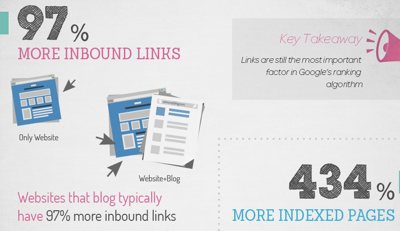

Blogging and content marketing has been one of the hottest trends over the past few years.
Online businesses figured out that by producing amazing content that provides value to their customer base they can increase traffic, educate and built trust: generating more leads and sales.
In this way, content ends up being a win-win for everyone: businesses get more people to their website and prospective customers get highly valuable information that helps them be more efficient and do their job better.
So, naturally, lots of businesses have bought into this strategy as a cost effective way to generate traffic, leads, and sales.
But not everyone has bought in: many businesses wonder if it’s too much work and others aren’t sure whether or not it really works.
We’re game to say that it does work and that we’ve gotten amazing results thanks our content marketing here at Vero.
In order to back that up, we’ll walk through three compelling reasons every business should consider starting a blog and discuss whether a blog is right for your business, or not.
Reason #1: Search Engine Optimization (SEO)
In order to rank better in search engines you need more content. You need more pages on your site that can rank in Google and the handful of other search engines that will drive meaningful volumes of visitors to your site.
Fortunately, one of the easiest way to get more quality pages is to publish content as blog posts.
Think about it this way: if you were to try add new pages to your site marketing site you’d need to dream up and design fully-fledged, varying pages in order to do well. That ends up being a lot of work. It takes a lot of time and isn’t replicable.
On the other hand writing a new blog post is a process that can be streamlined without losing meaning. Sure, your posts won’t write themselves, but you can setup all the moving parts so that you just need to focus on finding a topic, writing thoroughly for a few hours and grabbing a couple of relevant screenshots. Once you’ve got this nailed then, voila, you can relatively quickly generate new pages with a solid 1,000 to 2,000 words that can now rank in Google for a certain set of keywords.
Not only will blogging help you generate more pages with more content on your site, but you’ll naturally have more opportunities to build inbound links – another big part of search engine optimization.
In case you don’t want to just take our word for it, Neil Patel recently published an infographic on his blog QuickSprout that showed that businesses that blog receive 97% more inbound links when compared with sites that only have static pages.
The infographic also shared that sites with a blog have 434% more indexed pages than sites without.

Source: “Why Every Business Should Blog†from QuickSprout
How’s your SEO been lately?
Have you been scratching your head about how to get more inbound links and how to create more content for your site?
The hard data doesn’t lie: business blogging and search engine optimization are a match made in heaven.
Reason #2: Thought Leadership
Not only will blogging help you drive more traffic from search engines but it will also help to build your personal and business brands as a thought leader. Building a brand isn’t just for the big guys. Jason Lemkin shares the power a mini-brand can have in the success or failure of an early stage company.
So, how does content marketing help you to build a brand?
Simple: as you write blog posts, you draw from and share your personal and business expertise in the subject matter related to your business. Since you spend more time than anyone else thinking about your problem and its solutions, being an expert in your industry is something that should come naturally. After all, you’re reading, studying, and working in your industry every day!
Take Rand Fishkin as an example.

He’s co-founder of Moz (formerly SEOMoz) and recently stepped down from his role as CEO to do even more marketing and brand ambassador work. So where does he fit into the content marketing equation?
Basically, Rand is one of the finest examples of thought leadership that there is.
He’s been creating content on search marketing search engine optimization since the early 2000’s and has been blogging and speaking on behalf of Moz the entire time. Thanks to his amazing content production he is now a well respected (if not legendary) expert in the search marketing field. His bio lists that he’s spoken at Google, Facebook, and Microsoft and give presentations for the United Nations, Stanford University, Public Media, NPR, YCombinator, and Hackers & Founders, in addition to co-founding Inbound.org with Dharmesh Shah.
That’s quite a resume, but it hasn’t just led to his individual success.
The fact that Rand is such a well-respected thought leader in his field means that people take Moz that much more seriously. If Rand Fishkin is involved, then Moz must know what they’re doing when it comes to SEO. The personal thought leadership Rand has developed is passed along and share with his company and lends credibility to the entire organization.
Another example is Neil Patel, co-founder of Crazy Egg and KISSmetrics, two internet marketing analytics companies. He’s an expert when it comes to internet marketing, which lends credibility to both of those businesses.
People think, “If Neil is involved in Crazy Egg and KISSmetrics, then they must be good at what they do because Neil really know his stuff.â€
Without blogging and without speaking, neither of these two thought leaders would hold the position they do. The reason Rand and Neil and hundreds of other founders are considered experts is because they write posts about their industry, which means they share their expertise and prove to people how much they know about their field.
The same holds true for your business. If you’re a personal finance company like Mint and you have one of the top personal finance blogs in the industry, then use that platform show people that your company really knows what it’s talking about.
Writing blog posts and demonstrating your business’s expertise in a certain field goes a huge distance towards positioning your company (and founders) as a thought leader and builds credibility for your brand.
And just in case you don’t want to take our word for it (again), here are some more stats for you:
- 61% of consumers have made a purchase based on a blog post.
- 60% of consumers feel positive about a corporate brand after reading their blog.
- 82% of consumers enjoy reading relevant content from company blogs.
- 70% of consumers learn about a company through their blog rather than ads.
When you combine all of these facets, business blogging is a great way to create a positive experience for your customers and to begin to influence them with your business’ expertise in its field.
Reason #3: Leads and Sales
Last but most definitely not least, the main reason your business should consider starting a blog in order to generate more leads and more sales.
As you write new posts that get read by your subscribers, shared via social media, and found through search engines, you’ll generate more and more traffic. Combined with the power of SEO (as per point one) this traffic will build, slowly at first and exponentially later, constantly increasing the number of potential customers that come across your product and give your homepage a look.
This can only help sales go in one direction: up.
The great thing about content is that not all customers are ready to buy on the first visit. As you’ll be blogging regularly you have lots of opportunity to talk with your potential customers and share all sorts of great ideas. After visiting your site 10, 20, or 30 times over the course of six months to a year, the time will be right for these potential customers to buy and your product will well and truly be in the running.
Here at Vero, our most important blog statistics are as follows:
- We generate 65% of our traffic via our blog,
-
42% of trial signups read a blog post before signing up to Vero, and
-
Over 65% of all paying Vero subscribers read at least one blog post before paying.
The majority of our other customers come via word of mouth, many of whom likely heard about us from blog readers. To be honest, if we didn’t have a blog, we wouldn’t have a clue how to grow our business in such a cost effective way or as quickly as we have.

Managing a blog takes time and sometimes it takes money too (when we pay for writing or design work) but the dollar cost pales in comparison to the cost of running an AdWords campaign that would generate the same amount of traffic, leads, and sales for our site. Further more, no other channel would help us build thought leadership and long-lasting, lead-generating content like blogging does.
It’s safe to say we’re big fans of business blogging since we’ve seen such good results with our own blog here at Vero.
Should Every Business Really Have a Blog?
I’d like to touch on the original premise of this post: that every business should have a blog.
Is that really true?
To be honest, saying it that way stretches the truth ever so slightly. There’s a ton of benefit that comes from blogging, and yes, 99% of businesses can benefit from having a blog, but not every business should have one.
So how do you know if your business should or shouldn’t? Here are some key indicators:
- Do you or does someone else on your staff have the time to write multiple blog posts per month consistently? Consistency is key when it comes to business blogging. If you’re not able to consistently produce high-quality content, then maybe you should consider whether or not a blog is right for your business. You should first evaluate the time commitment required and then make sure you’re ready to commit to the work that successful business blogging takes. If you don’t post consistently you’ll just get bummed out and blame it on the content marketing. Consistency helps you stay focused, learn to improve your writing and look to the future. Just like any other marketing, contnet is about testing ideas, seeing what works and repeating.
- Are you willing to hire freelance writers to produce content for your blog if you don’t have the time? If you’re not able to invest the time required to consistently produce content for your blog, then you may want to consider hiring a freelance writer. In case you do, make sure you look for qualified writers who are experts in your field and know how to write top-notch blog content. It’s worthwhile to pay a little more ($150 to $200 per post) to hire someone that really knows what they’re doing. This is a much harder road to start with: there is nothing like becoming your own content master but it is a viable path if you can work with truly dedicated writers.
- Are you willing to invest the time it takes to become successful? Gaining traction with business blogging can easily take six months or more. Your site needs to build momentum, you have to develop relationships with other bloggers and you have to learn how to promote your posts. All of these points take time to learn and to pick up steam. If you’re not willing to invest at least six months until you start seeing good results, then starting a blog might be something you want to put on hold until you’re ready.
Having said all that: if you put in the time and have the excitement to learn and improve your content marketing then business blogging is one of the most powerful ways you can drive traffic that converts to your website.
What are your thoughts?
Should every business have a blog, or is business blogging, i.e. content marketing, a waste of time for a lot of businesses?